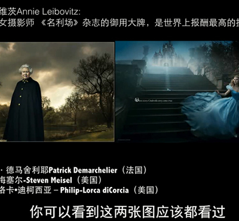

CSS Sprite的好处
CSS Sprite就是将网页所有的小图片合并为一张图片，用定位的方法确定图片的位置加以引用，随着HTML5的到来，CSS3的字
设计师懂得设计只不过是企业经营中的一个小环节，先有营销才有设计。没有营销的概念就做不出高水准的商业设计。
成功应该建立在成功的基础之上，我们只能从成功走向成功；设计师更适合从网络营销开始起步。
设计这一行，每天都有新鲜的东西看，很快乐；每天又被逼着创新，很痛苦，做设计师就在这种痛并快乐的状态中努力前行。
多少次我们都是出发之后才找到正确的方向。
一招鲜，吃遍天。
技术应具备明确的使用范围和被其它人认知的形式和载体，如原材料（输入）、产成品（输出）、工艺、工具、设备、设施、标准、规范、指标、计量方法等。
不只是创建良好的客户体验。为您的业务创造价值。您的业务成功与否取决于客户体验。Adobe Marketing Cloud 能够帮助您全面地了解客户信息与需求，从而提供量身定制的客户体验。不要满足于萍水之交，做客户的知心好友。
Adobe Marketing Cloud这是最完整的一套营销解决方案。它为您提供深入了解客户、开展个性化营销以及管理内容和资产所需的所有信息。我们帮您汇聚所有数据和内容，为每位客户提供理想的体验，屡试不爽。
HTML5 CSS3 ECMAScript6 JS 框架 移动端 jQuery 前端开发工具 数据可视化
一张网页要经理怎样的历程，才能抵达用户面前？一位新人，要经历怎样的成长，才能站在技术之巅？体验这里的挑战，探索这里的秘密；创造应用，改变生活。
PHP MySql Bootstrap Foundation Material Design Flat UI
UI 框架的核心设计目标是快速开发，组件化，使用性强，功能强大，轻量级，易扩展，致力WEB前端界面快速解决方案；推荐使用Foundation进行后台界面开发。
Axure Animate After Effects 设计的原则 交互动画 产品经理
虽然方案很重要，但方案只是设计过程中的一个交付物，那不应该成为设计师追求的最终目标；设计师的核心价值是为团队提供专业的知识，而非仅仅知识解决方案。
照片后期的结果决定了价值，精雕细琢是不可缺少的技能，可以让你的作品更具竞争力；修图如修心，不仅仅需要修炼技术更要培养艺术思维的意境及观察事物的想法。

很多人看了很多SEO书籍不去认真做，自然没有效果。把简单的事情做好，按照方法狠狠去做，排名就很容易上去。认真、细心、耐心就是SEO最有技术含量
CSS Sprite就是将网页所有的小图片合并为一张图片，用定位的方法确定图片的位置加以引用，随着HTML5的到来，CSS3的字
XAMPP新建多个站点
网站提交
开源的电商平台对于想做外贸的是有很大用处的，可以用作独立的电商平台。每一个电商平台都是有利有弊，为了细
windows显示PSD缩略图
网页中图片格式主要有gif,jpg,png,tiff,psd等，大图片可以缩小，小图片不要放大，模糊与变形的图片不要放到网站，会影响整